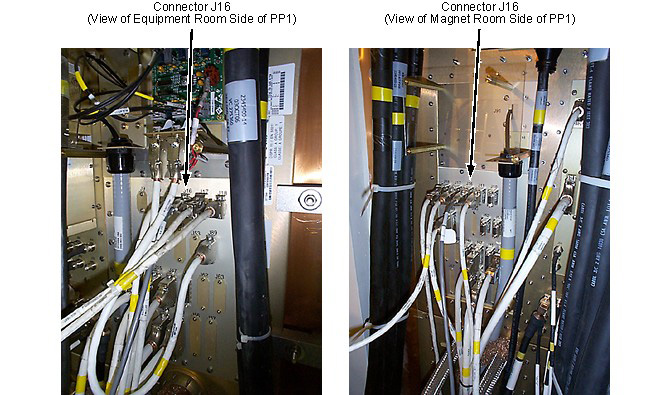
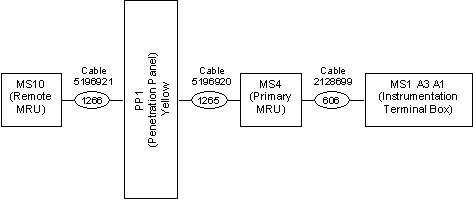

Illustration 3: Remote MRU Penetration Panel Connections

| NOTE: | The wiring diagram for both single and dual MRU installations is shown in Magnet System Wiring. Refer to Illustration 4 for dual MRU cabling. |
Illustration 4: Connection Block Diagram
